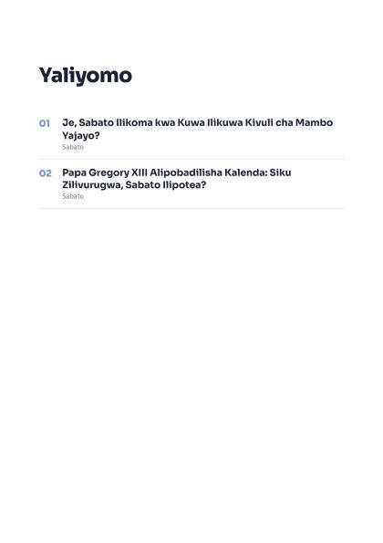
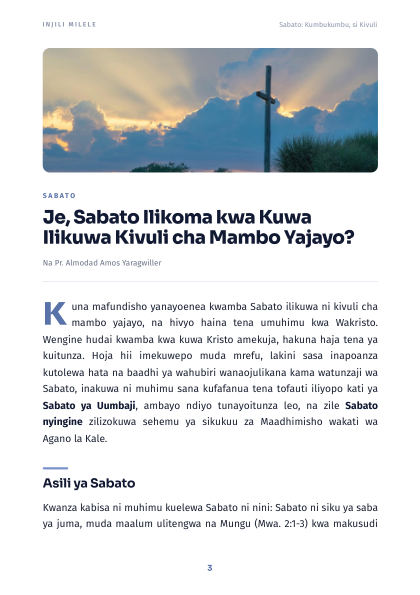

Sabato: Kumbukumbu, si Kivuli
Makala mbili kuhusu Sabato zikiwa pamoja na maswali ya kujadili mwishoni mwa kila sehemu — zinafaa kwa Shule ya Sabato, vikundi vidogo na mafundisho ya ubatizo.
Kurasa za mfano


Kilichomo
- Makala 2 kuhusu Sabato
- Maswali ya kujadili
- Kurasa za kuchapishwa (A5)
- kurasa 20